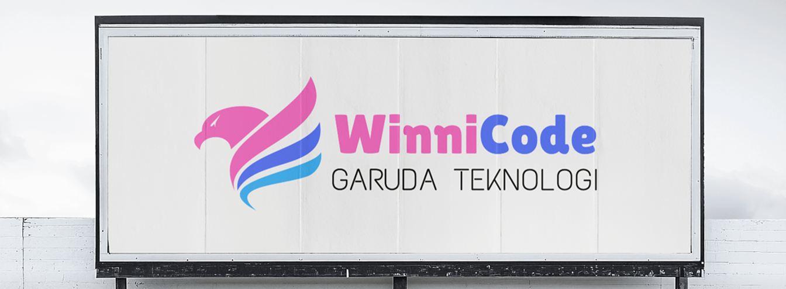
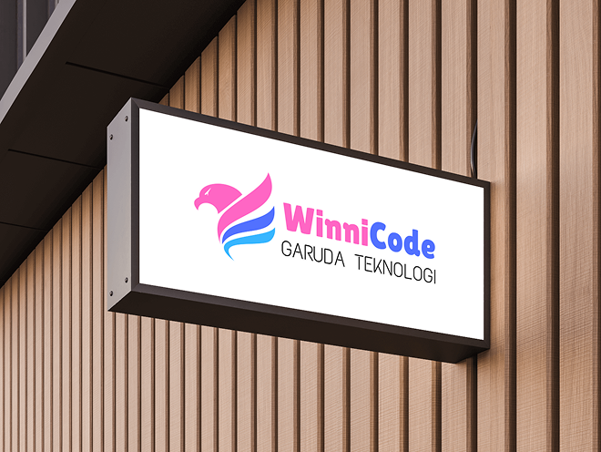

Winnicode Garuda Teknologi
Sistem Jurnalistik Terpadu merupakan sebuah inovasi yang bertujuan untuk menyatukan berbagai aspek dalam dunia jurnalisme, mulai dari pengumpulan informasi, proses penyuntingan, hingga publikasi konten. Platform ini dirancang untuk menjadi wadah yang komprehensif bagi para jurnalis dan penerbit dalam menjalankan tugas mereka dengan lebih efektif dan efisien.

Pendiri Winnicode Garuda Teknologi
Sistem jurnalistik ini dibangun dengan tujuan meningkatkan jurnalistik yang terpadu dan modern yang di susun oleh Divisi Informatika dan Development.

Winnicode Official
PT. Winnicode Garuda Teknologi
| Legalitas | Bidang | Lokasi |
|---|---|---|
| AHU-0526565.AH.01.30.Tahun 2023 | Jurnalistik/Berita | Bandung |
| Hubungi Kami (24 Jam) | ||
| admin@winnicode.com | +62 851-599-32501 |